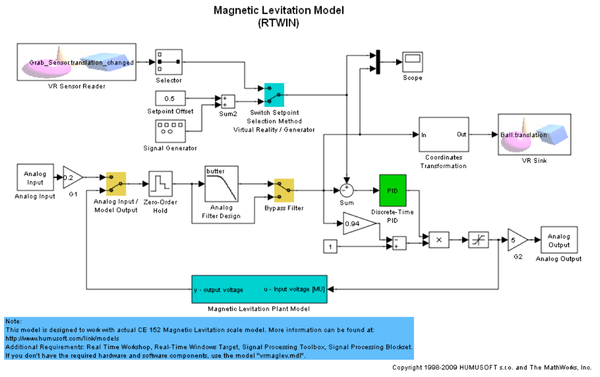
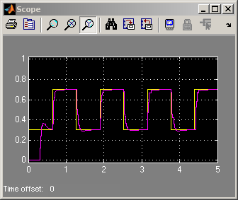
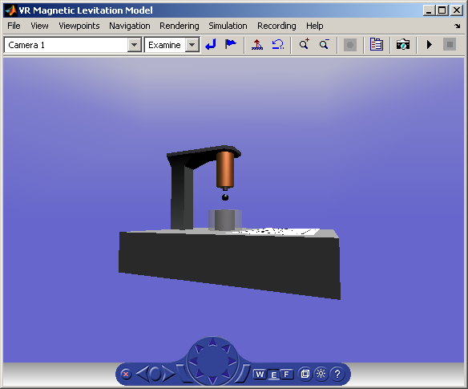

Magnetic Levitation Model for Real-Time Windows Target™
In addition to the vrmaglev example, the vrmaglev_rtwin example works directly with the actual CE 152 scale model hardware in real time. We created this model to work with Real Time Workshop®, Real-Time Windows Target, and the HUMUSOFT® MF 624 multifunction I/O board. However, you can adapt this model for other targets and acquisition boards.
A digital IIR filter, from Signal Processing Toolbox™, filters the physical system output. You can bypass the physical system by using the built-in plant model.
Running this model in real time is an example showing the capabilities of Simulink® in control systems design and rapid prototyping. When you push the real ball up or down against the coil force, the position of the virtual ball changes in the virtual world. If you remove the ball from the real system, the ball also disappears from the virtual world. The changes to the real system are reflected in real time in its virtual reality representation.
Note that after enabling the remote view in the VR Sink block dialog box, you can visualize the Simulink model even at a remote client computer. This can be useful for distributing the computing power between a real-time Simulink model running on one machine and the rendering of a virtual reality world on another machine.
Note: This demo requires the following software and hardware components:
* Real Time Workshop * Real-Time Windows Target(TM) * Signal Processing Toolbox * Signal Processing Blockset(TM) * CE 152 Magnetic Levitation scale model (optional).
More information on the scale model hardware can be found at: http://www.humusoft.com/link/models
  